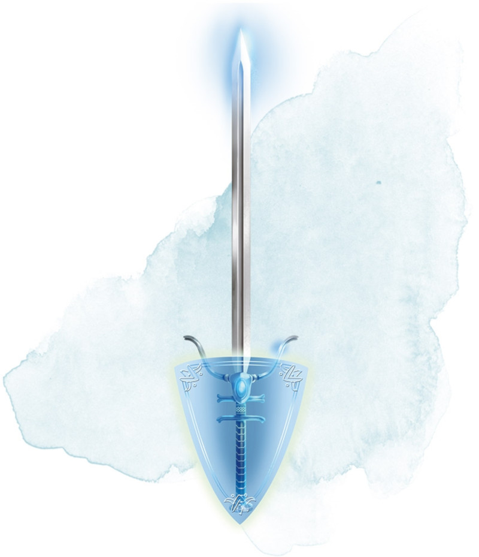

Gardienne
[ Defender ]
Arme (toute épée), légendaire (nécessite un lien)
Vous obtenez un bonus de +3 aux jets d'attaque et de dégâts effectués avec cette arme magique.
La première fois que vous attaquez avec l'épée au cours de chacun de vos tours, vous pouvez transférer tout ou partie du bonus de l'épée vers votre Classe d'Armure, plutôt que d'utiliser ce bonus sur vos attaques de ce tour. Par exemple, vous pourriez réduire le bonus à votre jet d'attaque et de dégâts à +1 et ainsi gagner un bonus de +2 à votre CA. La modification du bonus reste effective jusqu'au début de votre prochain tour, mais vous devez bien entendu avoir l'épée en main pour bénéficier de son bonus à la CA.
La première fois que vous attaquez avec l'épée au cours de chacun de vos tours, vous pouvez transférer tout ou partie du bonus de l'épée vers votre Classe d'Armure, plutôt que d'utiliser ce bonus sur vos attaques de ce tour. Par exemple, vous pourriez réduire le bonus à votre jet d'attaque et de dégâts à +1 et ainsi gagner un bonus de +2 à votre CA. La modification du bonus reste effective jusqu'au début de votre prochain tour, mais vous devez bien entendu avoir l'épée en main pour bénéficier de son bonus à la CA.
Dungeon Master´s Guide (SRD)
